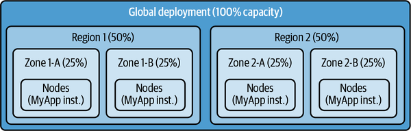
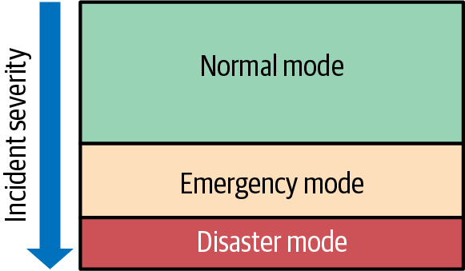

韧性能够增强可靠性。可靠性是指系统持续在设计规范内运行，并同时满足功能性与非功能性要求的能力。另一方面，韧性是指系统能够自动发现并诊断正在发生的故障模式，或借助受过训练的人员或 AI 智能体完成诊断。韧性系统会按照预先制定的响应方案降低故障影响，即使这种新故障在系统设计阶段未曾预料到。
韧性为依赖系统的用户保障业务连续性。可靠的系统在正常条件下可以持续达到 SLO 目标，而韧性系统即使处于更恶劣的条件下，也能维持较高的可靠性。如果没有准备好预定义的响应方案，仅这一点就可能耗尽系统的错误预算。服务中断若长期持续，又无法干净利落地恢复，甚至会威胁企业的生存。倘若用户数据全部丢失且无法恢复，整个业务都可能陷入危机。
你的挑战在于预见那些会使系统承受超出原始设计预期压力的异常情形，从而检验系统的稳健性。系统的可用性、安全性、完整性或性能可能单独或同时、部分或完全失效；原因既可能是无意的，也可能是恶意的。这项挑战没有封闭的答案，也说明韧性还意味着让支撑系统的人员、流程和技术具备灵活应变的能力。
在本章中，我们讨论了一种原则性方法，用以理解威胁系统可靠性的故障模式并设计支持满足用户期望的韧性能力。当你清楚地了解目标和风险时，建立控制这些风险的机制就成为一种结构化的工程实践，它增加了持久的韧性能力，以补充或优雅地扩展你的系统和团队的可靠性。
韧性可以构建在以下层面：
系统本身：不仅能从意外故障中自动恢复，也能应对过载、依赖项故障、错误数据或部分系统不可用等已知场景
支撑系统的运维工作流：让值班人员做好事件管理、调入或输出专业能力的准备，并能处理自动响应未能完全覆盖的场景，例如回滚、流量排空或 限流
通过纵深防御机制保障组织使命的业务连续性
当然，没有人能够预见和准备处理所有故障。记住，你所做的每一个设计选择最终都是一种成本效益的取舍 —— 在考虑你系统、团队和组织面临的威胁后，这是适应不断变化的条件的一部分。
韧性是指随着情况恶化，系统仍能应对需要技术或人工介入的严重故障。
从实践角度看，韧性意味着故障得到妥善处置，用户感受不到明显的功能下降；如果降级不可避免，也要向用户清楚、明确地说明功能受限的情况。
从技术角度看，韧性是指应用或其底层基础设施发生故障时，仍能维持适当的服务质量；即使这种故障在系统设计阶段未被预见，也应如此。
韧性投资可以从三个方面转化为具体行动：正确且经济高效地处理所有高概率故障；优先处理高影响（严重）故障；并妥善应对影响最大的低概率故障。人们很容易只关注高概率故障，把低概率情况一再推迟，但两者都需要认真评估并投入相称的资源。
每一项韧性改进都有成本，也都有开始产生收益的条件。如果收益实现的可能性极低，就很难证明大笔投入合理。下面概括工程投资在实践中的做法。
通常情况下，复杂系统中的可靠性工作侧重于以可接受的成本最大限度地提供高质量的服务。对于许多组织来说，5-9分(99.999%)的SLO是一个实际的上限(特别是如果用户通过互联网等下SLO系统获取服务)。投资解决其余的故障(~0.001%)，特别是解决这些故障的成本过高。不幸的是，其中一些故障可能消耗几十年的错误预算。如果你根本不考虑这些问题，你并不总是需要你为更高概率的故障设计的那种高质量的解决方案，但你至少应该考虑一下低成本的缓解措施—— 即使它只是部分地减轻了影响—— 是否可行。
在评估低概率和高影响风险之后，你可能会得出结论，对风险进行任何形式的投资都毫无意义，因为现有的缓解方案不足以降低风险。这也许是正确的结论。然而，考虑定期重新审查这些被推迟的风险，以重新评估不断变化的技术格局中的新选择。
重要的是，对韧性的投资不一定总能导致技术执行；相反，这可能涉及改变程序或对事件应对者进行培训。在实际操作中，团队设计出一系列的解决方案来处理特定的故障类，并减少服务中断的频率和持续时间。韧性 改进措施可包括：
设计时 请记住，你的系统的用户(例如服务器的客户，不仅仅是这些客户的终端用户)具有可靠性和韧性预期，他们也想轻松理解和管理系统期望用户采取的行动。1 这意味着 你们 应该了解这些期望，并作出相应的规划，权衡满足这些期望所需要的条件。要做到这一点，可能需要涉及工程、产品和销售团队的跨组织工作。理想的情况是，你成为用户的代言人，主张在这些团队内部和在领导层中达成合理的取舍。这意味着你们需要了解风险、哪些团队或技术可以帮助应对风险、投资多少以及何时停止。
由于需要考虑和管理如此多的潜在复杂性，需要采取有原则的做法。
Google SRE 正式确定了关键的经验教训 (根据多年来取得的经验)纳入一套支持可靠性和韧性的原则。这些原则勾勒出一个高级别的哲学，并提供了对可靠和有韧性系统的期望的基本定义。
原则 可靠性 目的是通过评估故障并控制其对预期互动的影响提供可靠的系统，韧性 在系统设计参数以外的故障中确保可靠的运行和恢复。想想待命小组或计算资源在服务中断期间解决能力短缺问题的适应性、效力和连续性。恢复 行动，防止或限制多种服务中断的时间，并控制灾难性损失的风险，以确保企业生存能力。
这些原则包括：
掌握可操作的数据，提供对系统和团队健康状况及其处理故障和满足用户需求的能力的形势和历史认识
平衡系统变化的速度与规模，以保持对系统复杂性的控制并尽量减少对用户的潜在干扰
建立系统说明，以帮助了解和控制系统如何相互依存和围绕故障开展工作
将系统部署到独立的故障域，以降低全局服务中断的风险，并能够在一个或多个领域发生故障后恢复
使系统能够在临时或持续过度通行期间保持最有价值的功能，并在其后完全恢复
系统如何接受外部来源的数据
保护系统免遭腐败或重要数据丢失，防止系统故障，保护用户免遭数据丢失
期望在现实条件下和适当环境中验证其韧性特性的系统
确保系统和小组能够维持业务控制，从核心服务和基础设施服务中断过程中的故障中恢复
我们之所以确定这些原则，是因为我们希望集中我们的组织的工程能量。通过Google的标准化生产平台，对许多原则的遵守默认有效。因此，我们得以贬低越来越多的有发言权的解决办法和工具。
Google这样的基于原则的方法可以为各种规模的组织工作。您最能确定哪些风险对你的内部和外部用户、客户或商业伙伴最为重要。用这种理解来影响你对原则的看法
确定你自己关于韧性和可靠性的一套原则(和支持性指导)，将使你能够更多地把工程工作重点放在对共同风险进行分类、按影响排列风险的优先次序以及选择可采取行动的补救战略上。以下章节会帮助你理解 如何应用它们。
因为韧性 这些原则应纳入系统设计及其整个生命周期。仅靠政策或标准文本远远不够。因此，在实际可行的情况下，应使韧性得到检验和验证(见 第 14 章).
你可能会问自己，我们如何确保遵守这些原则？一个简单化的答案是定义一条要遵循的规则(一个政策)，然后为如何这样做提供辅助指示(一个标准)。此类文件很重要，建立符合要求的服务所需的认识量可能会不断增加。技术和法规的不断演变，加上不断变化的和相互冲突的目标和限制，会加剧你的工程师的认知过载。
技术解决办法可以帮助保持韧性的期望——以及为解决冲突而作的决定——由默认(在可行的情况下)组织和适用，最好是没有人参与。添加测量，平台默认，以及方案执行支持你的政策，有助于使你的韧性目标更容易被引导。
在非常高的水平，你应该：
了解你的可靠性目标和错误预算，并评估对恢复能力的投资如何影响你保持这些限度的能力。考虑什么可以帮助你避免达到这些限度，以及如果超过这些限度可能需要什么解决办法。
优先向贵组织提供的共同解决方案过渡，这些解决方案可提供理想的功能。
如果通用解决方案不支持您系统或团队的需求，则寻求标准和政策所有者的例外，以实施符合其期望的定制解决方案。其中包括影响深远的边缘情况或新情况，即更好的办法是新办法或现有解决办法的改变。
如果一项解决方案的成本大大超过其潜在回报，则将问题升级为领导，以便他们可以决定是否接受风险或确定额外工程投资的优先次序。
当你能够提供方便使用的基础设施和构件，无缝地执行基本原则时，你就会得到一些更有成效、更有效率的东西。 好处包括：
你可能熟悉平台的"超能力"——有效的平台隐藏技术复杂性，为用户提供更小的一套有用和安全的控制。即使没有平台，定义和提供独立解决方案，为了确保持久性，你必须继续衡量这些解决方案的有效性(例如，通过使用、完成时间和投诉或赞扬率等衡量标准)，作为持续投资的反馈信号。随着你独立解决方案基础的增强，你最终可能选择建立自己的平台，以托管你的可靠性，韧性以及安全实践。
一个组织的生产实践自然会随着时间演变。在将这些做法编入技术时，变化的成本会更低，破坏性也会更低。技术堆栈的完整部件或分层可以安全地取而代之，具有极好的成本效益比率。与改变政策或指示相矛盾，并等待人们注意，调整思想，并经历一个试验和出错的过程来达到一个新的平稳状态。这种变化较慢，减少工程师掌握的用于最优先事项的认知能力，或更现实地说，最优先事项永远地拖延你实施政策变化的能力。
这里界定的概念对于保持韧性的灵活至关重要。威胁迅速出现，其影响可能是可以容忍的，也可能是不可推迟的。因此，迅速(主动和被动)进行改革的组织能力也是韧性的一部分。利用技术可以有效地将这种灵韧性纳入贵组织的韧性规范和做法。将韧性预期作为守则或程序加以落实，使韧性具有持久性、可发现性和可再用性，以产生更大的效果。对这些执行的修改可以迅速发布，同时确保每个人都了解最新消息。 程序。
解决方案 韧性应尽可能简单。复杂的计划或方法可能可行，但韧性 必须 工作时更简单的系统和相互作用更容易理解，构建，验证，调试和维护。
统一性有助于减少复杂性。提高工具、标准和整个生产政策的统一性可减少认知负担并改进成本效益。然而，强迫 标准化如果忽略不同应用的细微要求，就可以抵消这些节省。以及让开发者团队能够以言出必行的方式进行补偿。
它需要找到并保持适当的统一水平。要消除不必要的复杂性，同时又不使开发商的生活变得不必要的困难，我们建议继续讨论不同组织单位的需要如何协调，组织单位如何就当地的做法和工具选择达成共识，以及如何在全球分享经验教训。
相关考虑 是新(绿地)和现有(褐地)系统在统一性上的区别。有了新的系统，你有机会在一切适用的解决方案投产前进行设计和启用。然而，必须仔细地改变现有的系统，以便采用同样的解决办法，同时考虑到每个系统的独特要求以及修改生产系统的风险和成本。考虑到这一点，你需要仔细选择重点。让解决方案更容易在新建系统中被采用，然后，你可以首先专注于在最关键的褐地系统中实施解决方案。由此形成的更简单，更统一的生产环境将以更低的成本提供更大的韧性，同时帮助你的技术生态系统在默认情况下变得更加可靠。
风险管理可以 直接影响技术投资战略。明确阐述的风险有助于一个组织确定哪些风险需要优先排序，而团队和领导层在相互之间进行有效和准确的比较方面发挥着不同的作用。一个关键目标是评估风险的概率和影响，尽管这可能是非科学和主观的。另一个是评估可靠和持久的补救的可行性和成本。
为使风险决定能够付诸行动，系统设计应有助于收集关于已经发生或可能发生的故障的数据。这些数据应收集到所有系统和生产堆栈的所有层。各组织的每个部分都应利用一个共同框架来表达风险属性，作出自己所观察到的贡献。例如，STPA和CAST等方法(讨论见 第 12 章和韧性测试(讨论在 “灾后恢复和韧性”提供系统及团队识别风险的结构化方法
利用这些数据，本组织可决定是否接受某一风险，或投资适当 结构、自动化或操作响应的改变。
团队需要行动 (c) 提供数据，以就其开发或维护的系统的技术库内的风险作出知情决定。这是 垂直 观点 生态系统的风险。风险调查方法，如STPA和CAST 发现风险并照亮模式和机会，但这并不是 数据数据让我们能够量化我们的可靠性和韧性态势，或确认风险假设。它可作为这些方法的进一步投入。
例如，小组应记录服务中断的影响和促成因素，并根据这些数据采取行动，以确保最终用户、客户的期望，或 满足商业伙伴的需要。
为取得一致的成果：
反应，团队应追踪导致服务中断的因素的解析情况，已知的架构缺陷，变化速度，提醒和监督的效率，以及系统退化在退化变成用户可见之前的降级过程。
主动，团队应当关注组件的临界性和交叉依赖性，系统退化可能无法从中完全恢复，以及可能导致产品在故障后无法重启的其他任何问题。
这些数据使各小组能够根据成本与风险、测试覆盖面和结果、证明的成绩记录以及剩余的错误预算来调整工程投资，帮助减少或消除重复服务中断，并避免或缩短新的服务中断。
各小组应对各自系统所有互动的韧性承担端到端责任。这包括故障如何影响客户(用户或其他系统)、业务、恢复准备和故障控制，以及上述因素。评估必须积极主动，特别是针对低概率、高影响、很少或没有观察到历史的故障。
如果数据显示系统之间的相互作用导致服务中断，拥有这些系统的团队必须合作。组织领导负责查明和解决所有权和旁观者效应方面的差距(当时没有人作出反应，因为每个人都认为别人会这样做)。
数据来自：各个小组可以记录和汇总整个组织领域，以便进行更广泛的分析。因此，可以制定标准和指导(考虑统一性)，允许团队利用中央指导优先处理可靠性和韧性问题，使其系统不会回退于最低标准。目标是塑造当地的优化团队，以提高整体可靠性和韧性。这个 这是 水平 对生态系统风险的看法。
中央指导的一个例子是，应在故障之前、期间和之后收集可观察性数据。从这些数据得出的综合见解涵盖整个故障寿命周期(从良好状态到不良状态再回到)，支持分析和帮助实现以下所述可观察目标：“可观察性和监测”这在生产和开发过程中都很重要。例如，在引入系统时和在移除系统行为时，在不同的持续时间之后，都可以使用故障注入来观察系统行为(参见：“故障注入测试”) 第一部分针对对故障的反应，而第二部分针对故障后的恢复——是恢复的自动化或人工的、部分或完整的、缓慢的或快的？此外，可观察性如何与行为变化相匹配？这也允许您观察行为是否稳定或随时间而变化(可能意外副作用开始显现).
在全组织横向评价风险和业绩时，领导应向所有关键产品、系统和发展/业务小组提出同样的风险问题。这可以通过任何适当的手段来实现，例如进行数据查询，建立新颖的可观察性数据，或者简单地与个人交谈(例如技术领导或咨询委员会)等。答案，代表 新的和可采取行动的 然后，关于可靠性或韧性的数据就可以成为本组织向有关利益相关者提供的总体知识(例如报告)的一部分。
风险准确性 评估可能相当有挑战性。典型的风险公式 -- -- 乘以影响的可能性 -- -- 在概率或影响非常低时没有提供有用的价值。这对低影响故障是罚款的，因为处理不当对后果有自然的上限。但韧性更关注影响较大的低概率故障，因为这些故障可能产生影响企业生存能力的后果(而大多数组织的目标是最大限度生存能力)。因此，故障概率指导了韧性的设计。这个 这是 按费用计算 对生态系统风险的看法。
对于中高概率的故障，无论影响如何，我们建议制定和处理成本低的情景，以实施和维护。这些减缓措施应默认允许，或只是微不足道的，而且可以采用人工操作。从可以轻易、完全地解决的故障开始，并跨越你基础设施的最大部分。比较喜欢自我治疗的做法，这样问题就能够更快地得到解决，工程师的值班呼叫也更少。服务器节流、限速和发布块是包含(限制)故障的机制的例子。针对所有可选依赖性被禁用的服务器实例(通过故障注入)持续检测所需行为，是验证韧性行为的一种方式。
低概率故障 低级，明确接受风险 - 推迟所有工作，但将项目保留在积压或风险登记册中。2
低概率故障 高级 我们建议采取不同的策略首先，为你们今天如何处理这些故障制定计划。如果你对该计划的预期结果或力度不满意，你还有工作要做。对于每个故障的计划，估计执行可靠解决办法的费用。然后，你准备确定工程的顺序，以及需要多少个月或几年的时间。不要试图立刻出台工程解决方案来补救所有风险；相反，首先要全力应对少数风险，然后转向价值最高的风险。以下是从最高到最低的风险排序的粗略准则：
你的系统已经经历过故障( 如不小心删除数据)。
你的系统还没有经历故障，但其他系统(如无法恢复的备份)。
贵组织中没有人经历过故障，但大多数人都承认其真实性(如飞行中的数据腐败).
其余一切(已知无名。
所有情景(计划和行为)都需要定期测试。关于适当方法的更多信息，参见：第 14 章.
总之，风险管理应“转移”必要的关键决定，以提供适当程度的韧性，使这些决定进入软件开发生命周期的早期阶段。可通过以下方式做到这一点：综合运用关于面对故障的风险和业绩的数据，通过分布的小组向中央领导层提供数据，并按概率、影响和优先次序排列。 工程可行性。
虽然有必要， 技术变革是一个持续的风险源。变化的范围越大，可能受影响的面积就越大，因此在变化之前、期间和之后需要更多的安全考虑。此外，涉及生产和业务的所有系统、团队和工作流程都存在变化。
Google避免了生产中太多的东西变化太快。这包括对太多的组件进行单一更新，对同一个组件进行多处更新。核心问题是需要发展速度与需要可理解的、可管理的系统之间的紧张关系。随着系统越来越复杂，发展越来越快，特别是在AI时代，以下几点越来越明显：
迅速发展对于跟上企业的要求和应对故障至关重要。
变化必须是小而可控的，以便更容易地推理系统的行为，特别是当系统之间相互作用的复杂性超线性地增长时。
如果变化太小，发展速度会放慢。如果变化太大，对系统的影响就变得过于复杂，无法解释，导致可靠性问题。
Google的变革管理政策和标准帮助工程师理解和管理任何规模的变化所固有的风险。我们将在本节介绍一些建立抵御变化能力的做法。 系统生命周期。
所有变动 类型(例如二进制、数据或配置，或在进行实验时)的制造应逐步扩大范围并达到允许在最早的发布阶段发现故障的速度。检测必须及早进行，以缓解影响，这里一个简单的目标就是识别出意料的行为，然后才能影响很大一部分服务能力，并燃烧误差预算的不适部分。
数据变化 用于多个故障域的有特殊风险。这一类风险包括全局数据，每个故障域都期望一致，因此必须同时在多地进行改变。全局数据必须明确，例如，考虑对数据库的图案和元数据变化使用版本化，由快速数据发布激活。
在全球一致处理 异常 数据，故障概率与分配给变化监督的时间(涵盖在 “变化监督”) 为了弥补这一概率，全局数据的客户在酌情以故障开放或闭塞模式处理预期的和出乎意料的不良数据时，应提高其韧性。 具体使用场景。我们相关内容见 “输入验证”.
避免多重 一次发布的改变，直到被证明是安全的。例如，更新二进制和系统使用的数据最好独立完成，否则就可能不清楚是什么变化导致系统出乎意料地行为。另外，不要同时在多个区域更新你的系统，而是在您逐步发布的第一阶段只更新一个区域。等待后续阶段同时更新两个区，再更新两个多。
每当我们同时改变一个系统中的多种行为时，我们都会增加时间，成本，以及必要时撤销这些改变的风险。当多重变化的影响和副作用相互作用时，故障可能需要更多的时间来实现，复合(使最终的衰竭更糟糕)，更难追溯到导致这些变化的变化。
在谷歌这样的复杂环境中，可以在生产堆栈的多层同时发生变化。当无法序列化所有变化时，并且您被迫在一个时间窗口中平行化变化时，你应该避免改变相互相互作用的组件。例如，您在更新应用程序服务器代码时，避免更新应用程序的客户端或数据库计划。然而，更新该应用程序节点的网络固件或操作系统包也许可以。总是将应用程序客户端代码和服务器代码之间相互作用的修改序列化。
变化应该是 被监管(例如使用自动护栏来检测引入系统的出乎意料的行为)，使用端到端可观察性信号与系统的终端用户尽可能相近. Google的加那利分析服务(Canary Analysis Service， CAS)可以自动监控每个正在经历变化的复制品的健康，并等被标记为活的更新版，直到多个复制品(金丝雀实例)证明变化是安全的。例如，CAS将使用可观察性衡量标准，其中许多已经设计入了Google的生产平台，用于CPU/内存使用率的增长，出错/例外，过程崩溃，Prober结果等。一个更简单的解决方案是让监控警报参考一个运维手册，描述如何暂停发布，调查警报是否与变化有关，并恢复或回滚。
你可能需要对处于最高临界级的系统加强监督，例如基础设施供应商或许多其他系统需要依赖的任何系统。了解和观察更高层次客户(变化中系统的依赖方的客户)的健康衡量标准是良好做法。实际上，尽管你的系统在发布时看起来很健康，但是与你的系统相互作用的多个系统的故障可以提供足够的理由来暂停和调查。为了编纂这种监督，你可以包括来自 依赖方是您系统健康的一个标志。
团队应该知道 他们的系统有什么变化，能够安全地恢复这些变化，使用一般或具体的缓解措施。有点 一般性缓解措施 它们是：
将流量移动到其它没有显示故障迹象的地方。
把你的系统恢复到已知的好状态最常见的是，这是你的二进制(例如，如果代码中有错误)或数据(例如，如果管道错误地构建了新数据).
通过增加容量(如复制品，配额)来管理过载或更高的服务成本。这既昂贵又临时，为更永久的系统规模解决方案争取时间。
通过降低功能来管理过载或其他特定条件以保持状态而不是崩溃。
如果遇到新的“致命请求”，消耗过多的资源，或影响整个系统的任何其他客户行为，则有机制加以阻挡。
使用回滚来还原你的系统可以是一种更好的安全缓解(对于二进制、配置和数据)，因为你更相信前一个版本仍然会起作用(尽管并不总是如此，例如，如果新的逻辑已经以与旧逻辑不相容的方式改变了数据的话 )。如果回滚无济于事(例如旧状态不再有效)，
你应建立程序，确保在需要时提供相关的缓解措施，定期测试以正确工作(即，在不产生意外副作用的情况下作出预期的改变)，并进行实践，以确保人们知道如何使用这些措施并感到可以自在地激活这些措施。例如，你可能认为你可以回滚，但在服务中断时发现你无法回滚。提前练习和验证。
最后，减缓措施仍应符合所有变更管理原则：逐步发布、控制并发量和监督。如果你的系统状态被改变所以回滚只会造成新的破损状态请自便 早点接
也许有 当你的系统或组织异常低的风险承受能力。在这些敏感时期的变化需要进一步审查。在一个重要事件之前，你可能想要降低变化率或增加监督，以降低服务中断概率。战略可能包括更渐进的改变、更低的并发变更和推迟改变。哪些系统受到影响，影响时间有多长，在多大程度上所有系统都取决于情况。
由于敏感度的提高和服务中断的可能性，Google已经确定并定期启动只允许最小生产变化的运行期。在此期间，暂停对生产系统的非必要代码部署，以确保稳定性和可靠性。还确定了若干中间水平，以适应不太敏感和更常规的生产情况。以下是各级别的摘要：
继续根据标准生产实践进行特色开发和发布。
照常进行例行建设和发布，但推迟进行团队认为高风险的变更。
将推广范围减少到仅被视为低范围或高价值的更改类型：断开修正、例行配额改变、位置隔离的基础设施转接或关键的安全修复。
暂停所有可选生产变更和任何飞行中发布；只有断层固定和关键安全修复才能继续进行。
你可以制定并遵循类似的做法，例如，在工作人员级别较低、或贵公司正准备进行重要启动并想将中断的可能性降到最低的高度交通节假日。
作为将军 原则上，在整个软件开发周期和变革管理期间，应尽早发现问题。理想的情况是，你希望对生产、手工和自动化的所有改动都得到实施，以便在意外非常情况需要时能够主动加以阻止。记住，对于任何被测试所夹住且无法发布的突破性变化，或者在数据推力过程中被应用程序检测到的突破性变化，你的应用程序通过避免事件响应者应用缓解措施的必要性来显示韧性。我们可以提供谷歌方法的两个例子：功能开关和紧急停站。
A级 功能开关 是一种编码做法，在这种做法中，具有潜在高影响的变化得到充分实施，但被禁用，直到配置旗从默认的“失效”改为“启用”。在引入不相容的行为或改变生成此类数据的全局数据或系统时，可以使用此功能。这种解决方案使得回滚成为简单的配置变化问题，而不同时进行不相干的变化。功能开关的依赖性通常比二进制回滚要小：它们不需要取取二进制，修改文件系统，或重建容器。如果解除行为能力是安全的，使用特征标记可以缩短服务中断时间。为了得到最大价值，开发者应当始终如一地遵循指南，以充分加以实施(例如，包括所有当前特征的功能开关并保持旗帜卫生，因此旗帜很容易被合理解释和安全地使用).
一个 紧急停止开关 告诉系统停止它的活动或改变它的行为，以某种预先定义和固有的安全方式。这种安全对于可靠性是必要的，但是在决定启动缓解措施时，它也起到心理安全的作用。例如，Google有一个系统可以更新机器上的内核和固件。如果我们看到出乎意料的行为，还不了解促成因素，民众需要信心，相信这不会带来新的故障，
总之，一套独立的系统应监测一个系统的软件栈的总体健康状况及其运行时间环境，如果发现中断，应放慢或停止正在进行的变化。来自系统客户的信号可以提供情况意识，帮助评估正在发生变化的系统的健康情况。与最近的基线相比，在宣布更多服务中断时，如果可以发出警报，可以主动促使各小组在系统外寻找促成因素，使事件响应更加有效。
依赖项管理 是关于你的系统如何依赖其他系统以及如何使其他系统安全依赖你的系统这也适用于构成一个系统的组件和资产。
各小组应积极管理其依赖性，并避免依赖没有适当可靠性目标的系统来支持系统的可靠性需要。当理解系统部件(如基于RPC的微服务，数据库)和供应链(如软件库，固件，硬件)如何影响用户所期望的整体功能时，可以更有效地应用工程努力并管理风险。当你定期审查依赖性时，你可以对变化作出积极的反应——例如，你可能会注意到，当一个小块商业逻辑变得至关重要，但被发现在运作时，这种依赖性没有足够的可靠性。
函数的依赖树的分层越多，就越有可能出现一次无法产生出乎意料的后果。依赖性循环(循环依赖)或脆弱的依赖性可能导致运行时间出现死锁或连锁故障，可能导致局部或全球服务中断。供应链故障(外部依赖性)会打乱管道建设，从而会延误服务中断恢复或商业增长。设计韧性需要考虑到这些可能性。
系统开发人员和操作人员应能够：
说明构成 因此，每个人都能一致地理解它是如何结合在一起的，以及它的依赖性的性质。
文档依赖性 根据关键程度，可以静态和实时地监测(和可选择地执行)这些关系。
定义使用情景，以便其用户能够理解依赖该系统的安全和可预测的方式。
宣布故障情况 由系统处理或未处理，以便用户能够就可能需要建立的额外韧性作出知情决定。
了解用户的使用情况 由该系统间接支持，以便这一信号能够影响降低风险的优先次序和任何相关的遵守努力。
综合起来，这些能力将有助于确保贵组织能够分析、监测、审计和执行系统之间的相互依存关系，以查明和管理韧性风险。
有用依赖 管理包括两个互补结果的程序和工具：正确代表你的系统，并控制维持对依赖性的期望。
正确代表你的系统是第一个里程碑。你需要计算属于系统的全部生产资产，这些资产被归类为组件，并附加关于环境和类型的元数据。生产资产包括应用流程、数据库、节点和任何其他资源，使该系统能够建造、启动和运行。包括每个最重要的细节，并在有道理的地方增加粒度。
依赖项管理 控制是你的下一个里程碑。首先，你需要一些机制来锁定允许哪个组件的依赖性——例如，在构建、配置、启动或运行时间时，通过检查编译库或允许RPC端点与定义的ACL进行对比。二，建立侵权警示机制，在引入不良依赖关系时通知您。最后，确保你的系统表达方式保持最新，并修改你的系统定义以纠正缺失或错误的数据。
提高韧性 在依赖性中，先关注故障的广泛类别，然后扩展至最经常发生的故障类别。在分析故障情景时，注重直接依赖性，但也考虑间接依赖性。
定期证明可选依赖性确实是可选的。如果你将故障注入了系统表达中标注为可选性(错误容忍性)的每个依赖性，则系统的可观察性不应报告任何关键功能的新故障。如果收到警报，请找到并解决缺口。如果你不能确认依赖是可选的，那么它就应被视为必要的依赖。
对于必要的依赖性，计划你预期在故障时会发生什么，并定期证明这些计划是有效的。当您为需要的依赖注入故障时，您得到的提醒应该是针对特定函数，而不是其他功能。此外，这些警报应在你停止注入故障后自动停止，表明系统会自行恢复。如果你在实际中观察到的情况不同，请找到并弥补差距。更多关于这个，看 “试验依赖”.
在调查和验证依赖项的容错能力时，可以使用适合相应生产资产类型的故障注入机制。先在“staging”或“dev”等非生产环境中观察系统反应，并持续改进，直至行为符合预期。还应考虑偶尔在生产环境中注入故障，以确认系统在错误预算允许的范围内仍能保持预期韧性。
反之则 是 依赖性 是一个 依赖- 这取决于你的系统。在这种关系中，你的系统是另一个系统的依赖。
你应该考虑你的系统的变化(和故障)如何影响它的附属者，特别是任务关键者。除了直接依附者之外，还考虑对围绕你系统的更广泛的生态系统的影响：商业用途、操作者习惯、操作运维手册、跨系统互动以及恢复程序。
想象一下，服务中断使多个系统处于退化状态，因为它们所需要的依赖性故障了。事件响应人员必须决定如何在所有受影响系统中分配自己的努力和有限的时间。
如果你的依赖管理平台帮助发现一个故障的系统 依赖方 及其重要性、CUJs和地点：
事件应对者 可以确定和优先恢复关键受扶养人所需的功能。恢复需要的时间越长——从几分钟到几个小时——这一点就越重要。
维修计划 或其他破坏性变化(“控制下停机”；见 “隐式 SLO”)可以帮助受影响的依赖方为可能发生的任何错误做好准备，或者可以首先在有最不关键的依赖方的地点开始改变。
工程师大楼自动化 可以确定服务中断对依赖方的影响最大之处，并优先为这些CUJ先进行安全自动化故障处理(按秒排序)。
如果你的更改管理系统帮助系统宣布和使其能够发现当前的风险承受能力，那么你的依赖管理系统就有可能找到受服务中断影响的系统，并要求它们采取(或强制实施)更高层次的更改审查。然后，事件响应人员或自动维护程序可以采取行动：
团队应 评估所需依赖的替代品(回退方案)的可用性，只要这些依赖的故障可能违反可接受幅度以外的独立实体。如果可以将受影响的系统“切换”成受损或有缺陷的依赖的替代版本，那么排出时间往往可以缩短。
例如，你可以构建和维护你的系统的更早版本，或者一个具有低依赖性架构和/或更少特性的完全独立的执行. Google在主要系统功能特别能证明不可避免的额外费用合理的情况下，各有其长处和短处：
更早的版本(只需使用更旧的版本)在单独的环境或故障域中运行(涵盖在下一节)是容易的。缺点是修改会与主要系统共享许多部分，这些部分的故障并没有被这种“倒退”所覆盖。
建造一个完整的替代品成本要高得多，因为它需要与现有的实施保持一致或可互换。颠倒的是，你可以建立一个完全独特的堆栈，几乎没有共同的命运，因此很少有能使主系统和回退方案失效的故障类型。
为了支持这一点，拥有许多依赖方的系统应当负责提供自己的回退(如更早的版本，低依赖性执行等)。提供这些替代品的需要随着系统的关键程度而不同——例如，对于管理生产至关重要的系统需要更强有力的回退选择。对于可选的依赖性，管理回退方案的成本可能不值得。
拆分服务 进入多个独立的故障域可以减少服务范围更广、全球范围的故障风险，但只有在正确的情况下才能这样做。否则，你可能只有一种安全幻觉。如果你的故障域不完全独立，一个故障域被降下会导致其他域的失效，有可能使整个系统崩溃。
为了充分利用你系统中设计的冗余，必须限制有多少次服务事件会因为一次故障(或一系列相关的故障)而中断。这就需要评估应用程序的服务路径(从客户端到后端)、内部依赖性(组件之间以及与上游服务的互动)，以及上游基础设施能够保证的故障域(例如云区作为逻辑和/或物理隔离的单位)。
在考虑故障时，区分你控制的东西和你的基础设施的承诺。一旦你确定你必须处理哪些故障，联合 国 承诺。如前所讨论，你们将对更高概率和较低概率的故障作出不同的规划和准备。
你的目标是确保一个领域(如集群、分区、区域)的故障不会干扰其他领域，超出实际和成本效率高的领域。确定隔离和合用同一地点在哪些方面最为关键，并力求建立一种结构和部署战略，使应用程序能够细分为自给自足的部分。每一部分应包含其所需的所有依赖性(除允许的全球上游系统或数据外)并能够增强自身能力或独立于其他部分进行修复，以解决因使用变化或故障而导致的局部瓶颈。最简单的策略是整个堆栈在本地运行，但即使那时你还有几种 用于考虑和优化的选项。
怎样打破 将系统升入故障域往往取决于预期故障的性质。一般而言，应用程序故障可能源于：
客户活动 (例如，“致命请求”)
应用程序组件 行为和相互作用(例如，在最近发布或数据推后，所需的依赖性开始崩溃)
上游基础设施 服务中断(例如云供应商API的服务中断)
有形基础设施 服务中断(例如，一个数据中心冷却服务中断导致一个区域内的多台机器被关闭)
故障的性质往往决定了哪些故障范围是适用的，这反过来又帮助您在系统架构中制造出"隔离墙"。在Google上，我们发现下列类型的隔离对开发者定义故障域有帮助：
逻辑地理隔离: 包含该系统的区域、区和节点隔离。
逻辑功能隔离: 系统功能被隔离，据此允许客户使用。
基础设施隔离: 跨越硬件架和网络的隔离 基础设施。
行动隔离:操作员隔离和自动化，具有足够的证书和能力来改变系统。
逻辑地理隔离是定义故障域(例如云层部署中的区和地区)的通由。如果某一应用程序不能接受全局服务中断，就将其部署到一个区域内的多个区域和多个区域。这为您提供了保护，防止某些常见的物理故障，以及软件在您个人系统中的故障或发布。如果你选择一个保守的足迹，为了降低成本，制定明确和定期测试的计划，以便在一个新的区域迅速出现。
逻辑功能隔离可以通过运行专门用于特定功能的应用程序堆栈(逻辑分区)或用户集(用户硬化)来实现。例如，某些功能或用户的不同群可能需要不同形状的计算资源或定制的计算容器，每个容器都可能成为自己的故障域。
基础设施隔离可确保你不会在单个网域中运行所有服务器，您对这些故障域的能见度和控制可能是你可用基础设施的一个特征，最好是默认执行。如果你经历这样的故障，你可能需要开发自己的缓解。
业务隔离的重点是避免失去系统持续运行和演变以满足用户需求所需的业务能力，包括在故障后正常更新或修理，同时仍然遵循变革管理原则。例如，你需要那些非常了解这个系统的值班人员，以便迅速和安全地改变这个系统，而那些值班人员需要适当的运维手册和工具。Google一般将待命小组分成两个不同时间待命的值班轮班组，从每个值班轮班组分配两名值班人员(初级和二级)到同一个系统。因此，目前的值班人员有1名当地回退方案人员，另外2名来自远程回退方案小组，因此该系统能够适应在值班期间无法使用的值班人员。此外，Google还提供不止一种方式，使运维手册可供随叫随到的人使用，以防普通运维手册服务器受到服务中断的影响。因此，业务能力也与上游基础设施的服务中断隔离开来。
决定您要首先准备的故障域分类，并按顺序处理其余的。在组织层面，界定一个考虑到您产品要求和业务需要的适当的故障域分类，并指导开发商和SREs如何优先排序和 如何执行。
对齐 你的系统向故障域的部署是韧性设计的核心，确保硬件、网络或编码逻辑的单一故障不会比预期的破坏更多。妥善的部署可提高你的组织运作、恢复和规划能力。
当你将系统架构与物理和逻辑域的界限相匹配时，任何组组件都不应该只存在于一个故障域，如果你不准备同时失去整个组。请检查每个组为每一个适用的故障域(如区域，区域，设备，网络织物等)跨出多个故障域。
考虑 图 17-1任何特定节点将居住在某些地区和地区。如果你的系统平均分布在两个区域，每个区域有两个区域，而节点平均分布在这些区域，那么失去一个区域将造成你全球能力的25%的损失。如果你每个区域只用一个区域却忽略了反相关措施3 你可能会冒失去50%的全球能力的风险

你可能不知道系统生产堆栈的下层是否有共同的依赖关系。从 图 17-1，这些节点也将位于指定给某些区域的集群内的一个数据中心架。拥有这些层的基础设施团队(或云服务商)也应该调整故障域。
另一个避免的反模式是系统组件分布太广。这可能降低韧性。如果一个系统有两个相互作用的组件，它们存在于单独的网络织件中，这似乎是一个好主意(网络多样性)，但前提是每个网络织件都有每个组件的复制品，这些复制品的配置是为了优先考虑与本地对应方的互动。否则，一旦任一网络织件失效，系统就会失去这种相互作用。
最后，你应该管理故障域实例的大小。例如，随着交通量的增加，你的能力需求也相应扩大，考虑增加更多的区域(而不是扩大现有的区域)，以确保任何特定区域的规模，你可能会失去在舒适水平范围内的停留。这种类型的缩放策略不仅会给你更多的生长选择，而且还会降低故障域因惊群效应而变得"太大到无法倒闭"或导致连锁倒闭的风险(当一个大故障域故障时，其流量会超过更小的替代倒闭域，而当它重新启动时，其大域本身也会出现。大型故障域一旦失效，诸如排出该段等一般性缓解措施就可能不再安全，因为造成剩余域的负载增加。在这种情况下，也许最好管理 通过限制行车班次产生副作用。
我们已经有了 确定了遏制小故障和不让其变成大范围故障的重要性。对校正故障域的最小期望是，所有需要的依赖性都存在于本地故障域内(无论有多少个远程故障域也提供同样的依赖性)。在成本效益和每个具体系统的理由范围内，对尽可能多的类型的故障域而言，情况应如此。
然而，设计多重故障域的韧性仍然很重要，或者设计需要这么长时间才能缓解多重故障域的故障。换句话说，当所有故障域都故障时，你需要一个策略。事件响应人员可通过采用安全缓解措施、激活更广泛的缓解措施并促成“最敏感”的改变模式来试图遏制扩散。但是，当故障的蔓延最终被阻止时，你的一部分能力可能会被中断或无法使用。在某些情况下，在许多故障域，必须重蹈覆辙。
假设你的系统有24小时的RTO (区域渔管组织与区域渔管组织和区域渔管组织一起，涵盖在以下领域：“斯洛文尼亚”) 这意味着您必须在24小时内拥有有效的恢复服务的方法。如果你无法在这个时间范围内缩小能力差距并恢复所需的功能，你的承诺就会被打破。如果你的系统很关键，而且用户期望一个接近零的RTO，这意味着一个健康的复制品几乎瞬间失效，这可能需要将关键数据实时写入多个复制品。如果服务中断干扰了太多的复制品，那么防止发生重大违反SLO行为的关键在于回收被破坏的复制品，使其能比故障蔓延的速度快充分发挥作用。
为了阻止故障在多个故障域的蔓延并恢复你的应用，你的操作团队需要一小组能力。各小组应知道如何采取下列步骤：
隔离 系统故障域。阻止该故障域的组件为客户服务，并影响（“污染”）未受影响的故障域，方法是有效地从这些域的决策和执行路径中移除这些域。
维修 系统在那里。在孤立的故障域内修复系统，而不依赖于其他域。使用其他故障域对于权宜之计可能是可以接受的，但如果这是唯一可能的办法，则会增加生存风险。
重新组合 系统来自修复的孤立域。这补充了因故障域而丧失的系统能力，如果丢失了所有故障域，则能够完全恢复(生存能力)。
到达 输入非本地故障域。这种能力能够使步骤1至3按需要重复重复，每次将一个故障域恢复到服务状态，都来自一个单一的健康故障域(例如我们覆盖的“原始”系统复制件)。“预防损失”).
最权宜的选择是“种子”从现有功能复制品中回收，但如果您寻求最大限度的存活能力，这个选择并不足够，因为它并不说明你的应用无法达到功能复制品(例如，由于网络故障或全局数据中的潜在缺陷 )。优先回收一个与系统其他部分隔离的局部故障域有助于使其更能抵御大规模损失，因为所有复制品被中断的概率较低但可想象到的情况。
权宜之计也很重要，因为系统在断裂或被困状态下会降低你的组织，直到它们恢复到可用状态。你放入“修理”的任何组件都得不到定期更新，其中包括安全和兼容性变化。记住，当你将组件带回在线时，你可能会有数据一致性和逻辑一致性问题作为重新组装之前孤立的故障域的一部分来解决。
要记住的杂项陷阱：
非本地故障域的恢复必须包括制衡，以降低一个行为体在多个(甚至所有)故障域中作出改变的风险。这遵循了变革管理原则，即避免出现一种修复方式会打破另一种方式的情况。
拥有内在全球力量的韧性必须只在为其安全而选定的地点运作。这有助于减少由于服务中断或被损害和被滥用而失去这些能力的风险。该原则类似于使用保险箱而非笔记本电脑来存储全舰队恢复工作期间使用的安保钥匙，因为保险箱更加安全。
你的应用程序可能需要自定义如何在故障域中分配流量。对于地理隔离，使用负载平衡器是标准做法，例如基于客户端对服务器的相近性。对于功能隔离，负载平衡器需要一种方法来区分哪些shards的用户使用后端组，这可能需要每个用户在应用程序后端中命名和支持逻辑。对于物理故障域，不需要任何动作，因为必要的基础设施通常是域设计的一部分。你只要选择使用哪台机架的机器假设机架是互相连接的 机器可以互相联系
如何故障 域可以帮助防止全局状态的丧失——这个条件可以限制你将系统返回到正确和/或可用的已知状态的能力——保留一些注意力。全局状态往往是不可避免的，管理它需要特殊照顾，因为故障很容易造成全球混乱，而这种混乱很难或甚至无法修复。
全球状况的一个例子是全球复制的元数据，它用来查找一个系统储存它提供给用户的分布数据的所有地点。可能有足够的时间重建这种信息，但恢复可能需要很长的时间，并可能无法确定成功。在某些情况下，通过静态地汇编和分发全局数据，可以完全避免重建的需要。如果可行，这通常是一个更好的选择。
作为一项通则，所有固有的全球构件和功能的设计都应至少在一个故障域内保持其原始的、已知的好状态(数据、配置和二进制)。这还不够。你还必须能够将你的系统组件恢复到一个功能状态(通过正确配置和启动其二进制)，以便系统可以加载先前备份的数据。
故障域可以通过保存你的系统的全局状态副本来帮助防止丢失，但实际上这比您预期的要更具挑战性。你可以指定少数故障域来保存你的系统的“ Pristine” 回退副本，并增加一层隔离层，以尽量减少可能损坏或销毁这些副本的故障的传播。软件逻辑、实时或延迟( " 时间炸弹 " )的意外或恶意错误造成的故障，如果这些故障域发生最后变化，而且变化速度被大幅度地降低，就可以减少。例如，一个使用逻辑分区的系统(例如，用于用户或交通隔离)可以创建一个"原始”分区，在这种分区中，发布被多版本或多星期延迟，紧急发布被禁止，只允许监测流量。这种故障域不一定能起到“温床”的作用；它们不仅用于紧急交通，还只用于利用保存的全局状态恢复其他故障域。
在确定这对贵组织是否值得投资时，还有几个问题需要考虑，如果需要，如何执行。在全部损失风险高之前，你应指定多少个故障域来回收所有功能？恢复功能需要数据吗？是否能够在故障域使用？安全保护能否阻碍复原，因为这些保护设计在中断期间无法关闭？
深入防御可以减轻一些风险，特别是在处理预期和意外原因造成的过载方面。我们接下来会讨论这个问题。
负载均衡 跨越故障域，加上横向地扩大或扩大故障域，可以大大地避免你系统部分的过载。然而，它不会像在需求激增过快(例如，由于外部因素或致命请求)或由于无法将需求转移到其他地方(例如，由于交通特殊因素或所有其他故障域已经中断)时那样解决边缘问题。在无法避免过载时，你需要辅助能力来保持计算资源有用。
当系统开始崩溃并完全停止处理交通时，过载可能变得具有广泛的破坏性。接收过多流量的系统(无论是总流量还是每个客户流量、瞬间流量还是持续流量)不应以与过载不成比例的方式故障，或需要人工干预才能在过载结束后恢复。例如，一个为X提供但接收到10X的系统应该继续服务于接近 X而非接近于0，一旦过载减弱，就应该恢复服务于X而无需人工干预。
稳定状态可靠性的降低在过载期间往往是不可避免的，但这是适当的韧性取舍。从广义上讲，这里可以采取三种方法：
将分配给低优先流量的计算资源减少甚至为零也许是适当的。这将导致低优先流量收到高比例的错误(高达100%)，尽管它“没有错”。
可以通过陈旧的缓存条目或较少的与依赖关系的互动来达到结果。举例来说，如果通过20%的计算可以实现80%的响应质量，这是一个有效的选项。
当服务器开始信号过载时，客户端可以调整其请求率，优先处理最有用，成本最低的请求。
你应当结合自动缩放，负载平衡，过载套接，每个客户或每个用户软和硬配额等设计你的系统，并定期验证过载管理程序的有效性。客户端代码的设计应旨在降低服务器过载时的需求，使用客户端的自适应节流，指数退避重试逻辑，并按成本和临界进行流量标签。所有这些都减少了过载时的可靠性损失。
为了测试系统对过载的韧性，你可以逐渐地增加流量，直到观测到的好产出稳定. Goodput代表一个系统的有效吞吐量，具体衡量成功完成的满足客户端请求的工作(不包括故障的请求或重复)。稳定良好产量表明，在任何过载水平下，你的系统能够可靠地完成大量有用的工作。
总体目标是在过载期间继续开展有益的工作。成功与否取决于该系统能够持续处理其最高价值的业务的程度。如果这种能力下降到零，系统就实际上被打破了。一个韧性 系统将它尽可能地保持在零以上，如果它降为零，则能够快速恢复。
连锁故障是 因为它很容易导致全局服务中断 “损害”或“多米诺效应”，是指故障损害系统的一部分，削弱其能力并给其他部分造成损害。这进一步降低了容量，创造了一个很快会螺旋失控的正反馈回路。
超负荷造成资源短缺。CPU中的缺损，内存，线程，文件描述符，或网络带宽可以表现为雪球会变成故障的各种副作用。例如：
由于CPU无法处理流入，分配给每个请求的资源不释放，请求堆积而成。
随着请求的延迟性增加，RPC 调用的期限已过，导致重复请求和资源被浪费。
容器可因超过分配的限度而重新启动或被逐出，或因线程池或文件描述符已耗尽而不能及时对健康检查作出反应。
重启的容器中的进程有空缓存，必须重新聚集，将额外负载放入计算和存储子系统。
为了避免因过载而导致的连锁故障，你需要能够将流量降低到系统能够承受的水平的机制，同时能够使已经失效的能力得到恢复。
系统适应 过载设计和配置有两种能力：在过载时拒绝请求并充分满足其余请求，即使部分满足。你可能知道这些能力分别是负载丢弃和优雅的退化
负载丢弃 避免从一开始就拒绝某些请求而将资源计算出来，而不是等待过载条件迫使它们故障。本来会浪费部分处理这些请求的任何资源，都用来充分满足其他请求。
设计预期包括：
系统应该能够检测其过载时，使用请求队列长度，内存，可用线程等客观指标组合。
系统应设置请求的流量标签(例如RPC服务以及方法名称和参数)，根据成本和临界度说明何时可以放下请求(例如，在中度、严重或极端过载水平下)。
系统应返回一个错误状态，明确显示过载状况以及客户端是否应该重试(例如，可能触发重试的 " 过载 " 或 " 过载；不要重试 " )。
优雅降级 减少用于已接受请求的计算资源。通过为已退化的响应服务，您提供了一些值而不是零值，例如由于加载阻塞而被拒绝的请求。客户得到的答复不如正常准确或包含的数据，但计算费用较低。
设计预期包括：
系统应该对每个支持的请求类型有明确的降解选项，这样回复仍然有效(例如，如何在送达时无法安全地保存缓存条目，或者在返回部分搜索结果之前可以跳出多少被搜索数据).
系统应在响应元数据中加入可选的质量指标（例如使用不同的成功状态码），用于验证韧性行为是否按预期发生降级，并帮助客户端发现和应对降级服务。例如，可以提供缓存陈旧度时间戳，或响应时忽略的数据或后端查询所占的百分比，但要避免将这些指标意外暴露给外部最终用户。
韧性系统使其客户能够通过利用客户端主动减少对过载服务器的需求 重试逻辑 自适应节流。当服务器在完全故障后恢复时，这种客户端可以作出类似的反应。(注意这只适用于系统对其有影响的客户，例如因为他们是系统端到端架构的一部分，它假设系统或组织为客户端控制规定了标准. )
重试逻辑 确定 请求故障时客户如何进行。如果状态代码显示有电流(可修复)错误，客户端可能会重试请求。你的设计目标是为 怎么样 重新试验，使所有系统都能轻松地遵循这一标准。
设计预期包括：
客户端应该使用指数退避，这样可以减少服务器的负载并减少负载被扣的需要。
客户端应随机化指数退避时间（即引入抖动），以减少同一短时间窗口内多个客户端因服务器丢弃负载而同时重试所造成的负载尖峰。基础设施系统通常拥有大量客户端，因此这一点尤其重要。
当大量的工作在服务器无法使用时被排入队列时，客户端应当谨慎地重试，这样可以避免在服务器重启时会加剧可能的过载条件。这些重试应限于单一的客户层次，这样客户的客户就不会制造一连串重试。
自适应节流 动态 根据成功率调整客户端请求并减少流量，以避免在错误可能性高时浪费服务器资源。当客户端观察到许多最近的请求故障时，它可以选择停止发送新的请求(假设它们也会故障)，并且只对最重要的故障请求应用重试逻辑。这可以大大减少服务端过载。
设计预期包括：
客户端应当了解请求的错误类别和每个请求可能的恢复时间，这样可以相应地对跳过请求的时间进行定时。
客户端应当通过根据每类请求故障的近期历史计算出获得出错概率来进行自我调节。随着故障请求数量的增加，计算出的可能性也随之增加，导致客户端进一步减少其在服务器上的负担。
客户在计算这一概率时应考虑关键度信息(例如来自依赖管理系统的规格)。对于临界度较低的工作流程，较低的出错阈值可能足够了。
系统并不总是能控制客户端代码，因此具体说明行为指南(如已公布的规格)是告知潜在客户的关键。对于你的系统的客户 能够 控制或影响，通过客户端库提供默认执行更好。这种客户端库可以包含在基于HTTP的服务前的API网关中，也可以直接输入用户应用程序。在Google，我们经常使用标准化的客户端库，其中包括客户端控制以及 把它们和我们的生产平台结合起来
当你的系统是 过载，最理想的做法是只将故障(错误反应)隔离给导致过载的客户，所以其他客户不受影响。
前几节覆盖的服务端和客户端控制可以按每个用户应用。如果用户隔离对你的系统有价值，你不妨考虑提供使用承诺的能力，每个用户配额 基于这些承诺。然后，在设计每个用户的预算和控制每个特定过载机制的参数时，你可以重复使用这些资源配额(排量、优雅的退化、重试逻辑、自适应节流等)。
对于进入过载状态的系统来说，目标是在超过每个用户配额时迅速作出反应，在过度流量与过载症状直接相联时更快作出反应。例如，在CPU过载期间，每个用户对CPU成本高的请求的所有阈值都可能是 按比例调整 成为 严格执行因此，每个受影响的用户将经历更多更多的负载丢弃和Y% 的重试，与该用户的配额成正比。
对于与过载服务器互动的客户端，特指过载的错误应旨在告知用户行为上可操作的变化，以有助于缓解过载资源。可以定义客户端重试预算，以控制在通知用户过载之前持续重试的时间(例如，有一个状态信息，如“暂停现在发送更多请求”)。在服务器方面，具体过载错误应旨在减少过载资源。
设计预期包括：
服务器应当执行每个请求重试预算。在同样类型的请求故障了X次之后，通过过载错误向客户传播故障，因为系统的后端可能过载，这表明系统内部或依赖性更持久。
委托人应当实施每服务重试预算。如果在所有请求中重试比率超过Y%，客户端会向服务器发送，则向用户传播故障情况。这限制了跨系统故障域的重试尝试，但仅限于许多故障域过载时。
简而言之，即使在设计良好的环境中，你的用户也很可能预计偶尔会过载，他们也可能会期望得到信息，如果他们能对此有所作为，无论他们是否对病情有所贡献。应当设计服务器和客户端，通过检测过载条件和采取行动管理内部过载情况。尽可能减少负载。
当过载响应配置 面对连锁故障或再次服务中断，有些紧急行动会有所帮助：
可以通过拒绝网络进入系统来去除某些交通来源。如果该系统受到死亡询问，并能识别和阻止这些询问，这可能是首先采取的行动。
在过多的故障域或所需的依赖性被过载干扰之前，导致您系统崩溃，尝试增加现有故障域的资源配额，调整负载平衡以便在故障域之间得到更好的利用，或者翻出系统组件的新复制品，直到新增资源不足以稳定系统。
禁用任何可能试图重置已停止对基础设施健康检查作出反应的组件的生产自动化。超负荷系统更有可能表现出这些症状，但重新启动这些系统必将消除能力。
如果您确定过载服务器没有产生良好产出，以控制的方式重新启动服务器可能会使您恢复失去的能力。
在用户不耐烦地试图重新负载客户端时，您也应该有一个系统冷却启动的计划，因为他们检查服务是否恢复了。客户端重启的一个可能的副作用是：“校正故障域”。客户端发送过多的回覆会严重妨碍恢复，因为系统可能永远无法达到能够对收到的请求作出实际回应的好状态。
数据是另一个 复原冒险的来源。对系统的投入可能来自质量或安全控制程度不同的来源。这个 稳健性原则 在计算中，可以表示“在发送时要保守，在接受时要自由”，适用于你的系统应如何处理所有输入。我们可能希望用户与我们的系统互动遵循规则，但我们仍应期待意外(或恶意)坏投入。系统在遇到坏数据后应当以保持功能的方式安全故障。
你的系统应该期待并准备处理任何可能存在缺陷的地方的不良数据，包括来自系统外的数据、依赖性提供的数据和从存储中读取的数据。勤奋处理输入出故障以免他们伤害到你的用户或你的任务将会得到回报
作为工程师和组织领导者，你要将导致服务中断的不良投入的风险降到最低。配置和代码等输入是控制；它们可以改变执行逻辑并触发各种故障。不要让他们!
设计预期包括：
疑似不良配置和不良用户内容，应当迅速，准确，自动检测后再造成重大影响。工程的重点是帮助团队识别投入风险的来源并保持一套建议的反应战略和执行。使用适用的算法来检测所有相关类型的不良输入。
应有可能在确定正确的纠正行动后，在规定的合理时间内(分钟，而不是小时)减轻数据差造成的损失。工程的重点是为已知和潜在的情景确定和准备纠正行动(安全或广泛的缓解)，例如实施数据回滚和修订许可名单或否定名单，以及对人工纠正行动的待命反应。目标是在数据检测不善可能故障或出现倒退时进行纵深防御。
请注意，这里我们的重点是系统执行期间对变化的回弹力，而不是软件开发生命周期期间的变化；这些变化包括：“变化管理”.
你的系统怎么样？ 对不良数据的反应将取决于输入的性质。坏投入包括：
以空更新取代已存在的数据可等于删除。其后果可能是巨大的——比如在ACL变为空时将人从系统中锁出，或者服务器在发现一组关键后端时会因为文件权限出错而崩溃。总是检查输入是否为空，并评估这是否有效。
与空更新类似，截取更新可以相当于部分删除。如果在流式RPC过程中出错，系统可能知道它只收到部分更新。但数据被生成的代码所截断，如果无法被检测到，则可能更难精确地检测和晚些诊断。例如，系统如何能证实数据推力的本意是像往常那样短10%？ 检查能够验证数据完整性的额外信息。
对于最小的数据元素(如字节或比特)，需要检查和等出错检测机制。这些可以应用在数据传输和存储协议的每一层(许多都是默认的)。例如，如侧边栏所讨论，完整性检查可以检测被网络电缆错误损坏的位元 “案例研究：复制期间被损坏的文件”.
如果应用程序逻辑中没有完全指定可接受的格式(什么是“好”或许可列表)，你接受的数据在执行流程中可能会进一步失效。例如，如果系统只试图定义“坏”的东西(否定列表)，则边缘情况可能会被忽略。
如果新版本的数据没有到来，现有数据可能变得陈旧，例如，当被引用对象迅速改变时，缓存信息就不再具有价值，例如健康后端的地址。
你的系统应该测试、检测和正确拒绝所有不良输入。你还应定期测试您系统对不良投入的处理方式，包括其预防和缓解机制的有效性。
当你 系统被硬化为坏数据，它们通过在先前状态下继续操作或采用错误处理技术(涵盖在 “过载管理”) 这种韧性补充了为下列设想所作的准备：第16章 .
在Google的几起停机事件中，如果系统只是继续做它以前做的事，并忽略控制飞机的新可疑指示，
设计预期包括：
Diff 太大了: 设计系统以识别新旧数据之间异常大的数据，对数据进行额外检查，如果有疑问，则拒绝。例如，如果配额限制或经授权的用户名单缩小或大幅度增长，要求额外指标说明变更是有意的，可能比较安全。
部分更新: 设计输入，通过提供冗余信息使数据完整性易于被验证。例如，具有一组允许身份的数据结构可以包括一个具有该套预期大小的字段。
新建错误的数据:在设计输入时，只有一种正确的格式，使定义“好”的外形变得切合实际，并避免试图定义“坏 ”。例如，对重复字段使用稳定的顺序，并酌情禁止重复。
保存好数据: 设计系统时，在为回收系统资源或遵守数据处理政策所需要之前，不得放弃良好数据。例如，将上个版本的数据保存在内存中，这样你就可以随着内存指针的改变而滚回它去，而不是从原来的稳定存储器中取回(假设更旧的版本甚至仍然可以读取).
硬化系统还应对接收不良输入发出警报。这不仅应在需要采取人工行动时发生，而且还应收集关于处理故障的趋势和模式的可操作数据，以改进风险管理。
数据管理的韧性 数据故障与其他类型的故障截然不同。第16章 包括当数据丢失时，补救可能更加困难或不可能，以及你们的系统应如何减少许多高概率故障造成的数据损失的机会。在本章中，我们侧重于由于合作系统之间的出乎意料的相互作用或差距而造成的更高层次的数据丢失问题。
你的组织和系统可能使用多种存储系统管理用户和基础设施数据，包括物理存储、原始逻辑存储、分配数据库和衍生数据的管道。即使每一层都设计了冗余数据，你还是应该为永久丢失用户数据或组织数据的某些系统性风险做好准备。
以下是一些理论例子，说明你应该规划的低概率高影响情景：
元数据损失的追回 在存储系统中——例如，对冗余数据所在位置及其在允许访问加密数据字节方面的重要性的了解。
恢复加密密钥，例如数据加密密钥(DEKs)或执行安全控件的密钥加密密钥(KEKs)，保护数据字节不被非特权使用。即使是数据恢复过程也需要这些。
无意销毁数据 由于下层存储系统例行操作的副作用——例如，数据库或存储设备复制件被从服务中取出，而没有语义上的内容，即这些复制件是任务关键系统的复制件。
追回数据管理控制方面的故障 目的是限制数据损失——例如，当一个 " 写入 " 存储系统丧失封存数据的能力时。
对这些故障情景的反应速度至关重要，因为其潜在的全球破坏作用。执行所有相关建议：第16章 能够显著地改善反应时间并降低跨系统数据管理风险的总体成本。
任何行动 数据——特别是在涉及人类时——应被视为对系统完整性的重大威胁，这可以通过潜在的意外全球变化来体现。数据操作的去全球化是限制影响的一种方式。如果可以建立结构安全屏障，限制存储系统的管理行动，那么生产环境只有较小的部分可以随时更新。这使得人类操作员或AI 智能体的单一错误或行动几乎不可能造成瞬间，全舰的数据中断。
以下是变革管理有助于数据损失去全球化的一些方法：
配置和二进制的发布 对于存储系统(如块存储节点)，应当限制在防止不良发布影响整个舰队的范围。
在节点和装置上改变操作 如果受操作影响的数据集全球冗余不足，存储系统(如OS升级，设备升级)使用的存储系统应当被暂停。
改变存储数据上的操作 (例如，立即删除数据blobs)的范围应受到限制，而且最好可以逆转。
这些类别中有一个以上可以重合，因此管理货币变动也很重要(见 “改变货币”).
一旦定义了想要追求的目标，执法工作可以分阶段地取得进展：
使风险行动具有可观察性，了解它们在全球范围内降落的速度，以及是否正在使用预期的保障措施。
使自动化和操作人员去全球化，因为这些操作人员可以多次重复本地范围的业务，也许没有监督，从而有效地绕过去全球化的目标。
Harden反对高高的特权，这些特权可以本质上是全球性的，并可以避开任何去全球化的限制。
使数据删除 只有分阶段删除才具有韧性，内在的宽限期(如 " 移入垃圾 " 功能)是不可绕过的，除非通过完全独立的、保护良好的程序，专门用于表达数据所有者的要求或满足贵组织的具体需要。
确保关键数据管理系统实施安全性能，安全默认，防止用户造成意外数据损失。例如，关键被删除的数据可以保存至少X天(在保留对数据所有者的承诺范围内)——与规定自动删除电平数据的默认过期TTL相反。请注意，在关键数据上存在意外设置TTL的风险；这种情况应可探测以确认意图，或酌情通过代码逻辑加以禁止(见 “输入验证”).
设计预期包括：
应当实施各种机制来防止出现意外数据损失，从对用户行动的撞击警告到应用程序和存储基础设施的适当层的可配置和自动删除保护。
应通过默认的软删除机制(“被删除”)，扩大关键资产的留存窗口，以及强化保护，防止人工清理被删除的数据，直到系统管理的回收窗口到期。
系统应使数据恢复具有最低限度的依赖性，从基本的综合恢复功能到耐删除的备份和支持每个用户或每个系统重新将恢复后的数据输入现场数据库。
对于对你的组织有价值的设计期望，你可以分阶段地取得进展：
在组织一级，确定适用于广泛使用的数据储存系统的安全措施。并非所有期望都将普遍适用；考虑到每个系统有细微差别的目的和制约因素，指导应当针对每个系统。定期审计现有特征，调整系统特定数据保护政策，完善通则。未来的数据储存系统应遵循准则并纳入审计。
系统应开发缺失的安全特性并(或)改变默认值，使数据具有韧性，并提供可观察性，用于整个数据集的特性使用。然后，你的组织可以适用广泛的缓解措施(涵盖在 “安全缓解”确定需要注意的生产资产。
具具备韧性的数据删除可能意味着更高的存储成本，以容纳留在周围的额外字节 更长时间。你应该选最有价值的地方介绍这些管理费。
系统损失 如果该系统因此无法重新组装以恢复其关键功能，则元数据就可能是灾难性的。因此，这类数据——关键数据——需要深入防御。
如果关键数据使用备份，使用这些数据的系统与恢复数据的程序之间不应有共同的依赖关系(共享命运)。如果存在共同的依赖性，那么在必要的时候不可能完成恢复，因为系统及其恢复都受到同样故障的影响。见 “依赖项管理” “故障域” 更多关于这个话题。
让我们考虑从存储元数据腐败中恢复的两种选择：
如果存储系统X丢失了它的元数据，而X依赖存储系统Y进行基础存储，恢复系统QQs元数据需要系统Y的元数据完好无损。如果系统 Y 也被损坏，你可能必须先回收系统 Y 的元数据，希望系统的基础存储( 也许在存储系统 Z 中) 完好无损，这可能可行，但需要很长的时间，这在全球荒废期间可能是不可接受的。
捷径(当面对这种可能性较低的不幸组合时)是将元数据备份到一个独立的存储系统上，其整个堆栈独立于主存储系统。当我们掩护 “管理回退”，你可以选择适当的独立程度。例如，一个使用PostgreSQL数据库的系统可以将其数据库元数据存储在单独的PostgreSQL实例中，或者存储在另一个在架构和组织上与PostgreSQL相区别的数据库管理系统中。
这两种方法都有利弊。在设计系统时，
退后备份系统有可能被重新用于各种跨系统韧性需要。例如，加密密钥和相关数据验证力学不能完全丢失，因为这会造成永久数据丢失。在足够的安全防范下，你可以保存恢复备份数据所需的解密密钥和重新加密已恢复数据所需的加密密钥，使其只能被其预定系统所读取。
后退后退的后退系统应该有适当的保护，这样你就可以依靠它们的韧性。例如，只读备份系统应确保任何读写能力 无法销毁备份数据。
一些最可怕的想象 当数据和元数据都丢失，或者当多个存储层被严重干扰时，就会发生灾害。这可以适用于区块级和文件级存储系统，数据库，以及更高级的专门数据存储。
恢复速度也变得至关重要。这可以是一个组织生存的问题，无法恢复会对用户产生重大影响。
设计预期包括：
存储系统应确定一项计划，以便至少能够恢复到用户数据从备份开始恢复的程度。这项计划的可行性应至少对一个故障域加以验证(见 “追回故障域”).
存储系统应估计恢复到大多数用户数据可以恢复的地步所需的时间，特别是为用户提供本土备份解决方案的系统。这一点的验证应该已经由存储系统来进行，但如果不是，请记住，实践恢复可能会发现出人意料的路障，例如，努力争取获得所有用户数据的足够资源配额。
储存系统的设计应有一个明确的战略，即要么在没有用户数据的情况下开始作出反应(同时至少有机会解释情况并可能在以后恢复和调节)，要么在完整数据集被找到之前一直无法使用。
由于数据丢失可能对业务能力产生出乎意料的副作用，因此回收计划故障或RPO/RTO/RWO目标的风险(讨论见 “斯洛文尼亚”未得到满足的，将提高。这是预期的，提前发现并减轻这些风险的一个明确途径是：一个现实的环境。
随着团队的不断发展，他们 需要确保各项改革继续符合要求并保持后向相容。具备韧性对于实现这一目标至关重要。你可以将验证视为验证您保持并增强用户对你的组织的产品和使命的信心的能力。以下是一些重点领域：
随着需求随着服务中断期间经验教训的改变而变化，应不断更新测试。这适用于所有试验类别和机制。第 14 章 并适用于由你的系统和组织实施的韧性设计。
韧性的验证侧重于在足够现实、但仍受控制的情况下的观测系统和小组。为了进一步细分，你想涵盖系统内部和跨系统的工作流程和团队在正常、紧急、甚至灾害模式下运作时的工作流程(包括在 “事件模式”) 如前几章所提及，如果预期行为没有得到验证，则无法假定是否韧性 其实 最近够了适当采用生产前和生产内环境相结合的方式。
在实际验证不可行的情况下，理论演练仍能提供实质价值。例如，对全局数据损失进行现实的回收测试可以使你的组织面临生存风险。相反，你可以进行基于情景的“预览”测试(见“灾难角色扮演”中)。本书第一版第28章贯穿所有相关互动和活动，将危险行动排除在外。这有点像 《龙与地下城》，但玩家也知道“魔法”IMAG协议(讨论在 “事件管理”) 然后，在理论演练之后，“玩家”可以通过操作在演练期间浮出水面的更安全的指令变体来进一步练习。
如果验证活动是可选的，那么这些活动很可能不会持续下去。取而代之的是，着眼于那些可以变得便宜、可重复和自动化的东西，从而使验证审查程序到位，并侧重于发现新的故障和验证补救的风险。酌情使验证活动的时间安排自动化，并报告其定期性和结果。将不需要人参与的所有活动自动化。具备跨团队验证的，应当明确归属和责任。并承认。
团队应 维护所有关键可靠性和韧性测试类型的环境，以确保其系统的充分覆盖。本组织通常应将这些环境作为测试战略的一部分，供所有开发者使用。
然后，系统所有人应使每项验证活动适应适当的环境。通过使用多种环境，在安全风险分配与逐步建立信任之间取得平衡：
并非所有缺陷都可能出现在更早的验证审查阶段(例如，综合测试)，因为所测试的系统的忠诚性通常不足以代表系统的现实经验。然而，你早期捕捉到的缺陷越多，越少会逃到验证审查的后期阶段，那里的环境越大，调试费用就越高，因为许多变化被一起测试。
缺陷者在被引入验证测试阶段后，可以更快地被捕获，而测试可以更频繁地进行。这在更早的阶段比后期发生多，因为那里的测试比较便宜(例如单位测试).
在验证审查的后期发现的缺陷应大多是新发现或未在更早阶段发现的出乎意料的倒退，大多数测试都通过，作为对更早测试的行为的现实确认。
在你达到一个稳定的资质覆盖状态后，在更现实的环境中昂贵的测试的要点是确认在更不现实的环境中更便宜的测试继续代表并成功验证出所有重要的应变行为。还可以利用更现实的环境来验证人类的应对计划，确保当系统最终超出所设计的规范时，操作者可以进行适当的行动。发现新的故障情景很重要。
为了达到这种稳定状态，只使用生产前环境来测试预期的适应性行为，这些行为并不需要现场生产的全部复杂性。这将帮助您建立安全记录测试，减少 如果这些试验在生产中重复，
恢复能力的验证 在某个时候，应当使用一种试验环境，为目标明确的故障情景建立真正和完整的条件。我们在此举出几个例子，在这些既定条件之外进行的验证证明不足以建立对系统的韧性的信任。
例如，为了确认在丢失了多行表格后用户可见的恢复，您必须注意的是，您正在运行的系统实例，即目前为用户服务错误的实例，在您恢复备份或快照，并将缺失的表格行复制到实时数据库后，恢复其功能。通过在这样的测试中实际删除表格行，你肯定地行使了预期回收工作流程的许多部分。确保测试在生产中重复之前在非生产环境中定期成功，并使用生产中专门为此而创造和添加的测试数据。
另一个例子是，通过重新组合和重新配置其操作系统在标准波段外网络接口上的“回滚”生产路由器，确保你的网络隔离该路由器，使其无法使用正常的网络端口与任何东西通信。然后，在验证程序完成后，将路由器去同化并证实它恢复了正常功能。
建立和维护现实测试的环境可能十分昂贵。在谷歌，我们发现这些环境的多种用途，这增加了我们的ROI。在这些环境中建立和测试系统韧性有助于抵消实际资源的成本，以及维持我们测试其韧性的构成生态系统的每个系统的额外实例的业务费。
不论 您选择的测试环境，或是否是理论性的，验证应当定期进行，频率与每个具体案例的价值和成本相称。它可以通过单一测试或多个测试的组合实现，但只有完成回收结果的端到端聚合工作流程算作是实际验证。
设计预期包括：
在实践中应当遵守耐力行为(针对不断变化的生产条件的预期反应和回收行动)。系统组件和(或)互动越重要，其验证范围就越广，也就越现实。真实性包括规定一些条件，从一个真正的系统或其高可靠性副本中引起复原反应，并确认反应符合预期。
各小组应验证其在所有业务中断模式中的作业能力(见 “事件模式”)适用于它们的系统，与跟踪风险评估相对应。这包括建立工作环境(工作站、壳体或浏览器访问工具等)，查找和访问相关标准作业程序(运维手册)，以及执行调查或修改系统现实实例的行动。
例如，Google的抗灾工程团队将准备一个模拟灾害条件的现实环境，以实际验证一大批灾难恢复情景，并测试各种事件应对者的运行连续性。在这个环境中，我们将将系统与其他生产部分隔离开来(例如，使DNS和负载平衡无法使用，以及许多其他关键依赖)，为具有独特价值的DIRT测试创造条件(见 “灾后恢复和韧性”) 然后，参加这些测试的值班人员可以在符合他们想要核实的服务中断条件的条件下实施恢复程序。例如，在模拟大量网络断流的测试中，这可能能够发现局部循环依赖性和行为，使某些系统完全无法使用(而且易于修复)。
谷歌的团队偶尔会在数据中心处理即将发生的服务中断问题。在这种情况下，受影响集群的紧急服务中断程序取决于当地基础设施系统的安全关闭。对数据中心和SRE小组进行联合应急培训，涉及在受控制但绝对真实的条件下进行真正的集群复发。
这些例子旨在表明，由于Google技术堆栈的复杂性，系统和团队无法仅仅依靠设计或理论练习。相反，我们的目标是通过持续验证韧性能力来发展成熟度。这种成熟性可以表现为一种扩大的一套明确声明，其形式是：“工作流X对故障Y具有韧性，用Z来衡量。”
验证什么 (X组、Y组和Z组)可在系统主动和定期进行韧性假设分析时加以界定，并(使用STPA和CAST等方法)查明差距，选择其中哪些需要覆盖，甚至在 紧急模式。
事件应对，涵盖范围 第10章 ，侧重于减轻故障。但是，如果故障开始抑制事件响应本身，事情就不再是反应者的常态。在谷歌，我们称之为这些条件 紧急模式为了准备这些条件，我们设计了一套具有广泛适用性的灵活反应能力，而不是试图预测各种可能的故障。
例如，一个响应者通常使用安全证书，网络访问，授权代理，通信，事件管理软件等工具来分解断路和执行缓解措施(如快速回滚或数据推取等)。当其中一些部件被中断(例如颁发新的证书)时，部分事件响应中断时间也会被中断。受影响的应对人员随后需要以其他方式执行其行动任务。这些响应者现在处于紧急状态。
总体目标是确保事件响应能够继续下去，即使核心服务和基础设施——包括恢复工具——故障，从而防止完全关闭。这可以通过为访问、通信、批准和其他应对CUJs等关键能力建立独特的、具有高度韧性的后退机制来实现。
应急模式的设计涉及全组织和系统具体投资。一般来说，服务中断次数越多，用于支持事件响应的基础设施就越少，反应人员被迫进入应急状态的情况就越多，他们需要更有效地合作来缓解服务中断情况。在这些情况下，反应者需要针对事件响应的共同部分CUJ的明确而可相容的解决方案。
事件 模式是一种对事件响应的分级方法，根据故障的严重程度对操作环境进行分类(图 17-2) 一个关键的考虑因素是，这种故障如何影响用于管理事件本身的工具和基础设施(第1段)。表 17-1 (单位：千美元)).

| 模式 | 主要特点 | 依赖性和工具 | 目标响应者 |
|---|---|---|---|
常规 |
日常事件的标准操作模式，在故障为常规时使用，不停止事件应对过程。 |
使用高依赖性系统，标准接口，并具有丰富的特性。 |
大家，大部分时间。 |
紧急情况 |
故障会抑制正常事件响应工具的使用，但通过建立能让响应者多多少少遵循标准事件响应过程的强力回退方案，可以对这些故障进行预测和规划。 |
使用低依赖回退系统，这种系统可能维持响应者所熟悉的同一种标准接口。 |
每个人，大部分时间，但都有可能的容量或安全限制(大多数在正常模式下运行的响应人员可以切换到应急模式回退方案，接受最少的训练并通常在现场进行). |
灾害 |
灾难性事件的最后手段模式，在缺乏基本的分布式服务(如全球网络故障)的情况下，应对者依赖专门的技能和工具。 |
使用零依赖性组件并调整可用的接口来一起工作(例如命令行工具，直接网络访问). |
小型专门行动队，对所需的高技术技能进行严格培训。 |
本章主要侧重于紧急情况模式，因为紧急情况的概率远高于灾害，在工程投资方面值得优先考虑。如前所述，你仍应制订灾害计划，并分配足够的工程能力来管理灾害。
事件模式可以为系统开发者和事件应对者提供独特的路线图，帮助他们在故障时保持操作能力。对于领导来说，了解事件模式有助于维持对这些路线图的投资，确保 它们随着时间的推移仍然有效。
紧急模式准备 指导系统设计，通过创建分层的，低依赖性的回退来保证韧性。系统开发人员应：
使用分布在最小的故障域的最小的一组所需依赖关系，创建预计仍在紧急模式下运行的系统的简化版本。例如，如果整个系统(具有依赖性)适合一台机器，而该机器之外没有RPC依赖性，那将是理想的。并不是每个系统都需要这种倒退，因为执行方面的限制。将组织技术堆积所需的最小数量的关键系统列为优先事项，以便大多数工程师能够在恢复整个系统方面发挥作用。
确保正常模式和应急模式组件使用相容接口，优化响应人员的过渡。例如，要切换到回退系统，响应人员需要改变他们所使用系统的地址，但不需要改变其工作流程的核心要素。
提供系统功能可用的回退方案文件模块，并指明如何正确激活所采用的回退方案解决办法中的低依赖性特性。
系统应能够检测出故障，向用户建议如何激活回退模式或低依赖模式，并在紧急模式下运行时显示清晰的指标。例如，错误信息可以包括可操作的可转换为回退的指南。这可以大大减少响应人员的认知负荷。
在功能失效的故障期间(例如通过GUI或CLI行为的优雅退化)，系统应该保持稳定。避免完全的用户界面故障并减少响应人员的认知负载，可以随着时间的推移提高事件管理的效率。
分级事件模式可以作为简化认知负担的框架，为响应人员提供结构化决策树，以应对复杂的服务中断。事件响应人员应当：
事件启动时，应对人员应通过原则序列评估情况，以确定适当的操作方式：
正常的工作流程可用吗？(这一评价是暗中进行的。)
对: 保留在 常规 模式和注重减轻故障。
没有:继续下一个评价步骤。
该系统或程序是否为使用紧急回滚提供指导？
对: 向 紧急 模式，将指定的回退方案替换到熟悉的工作流程中。
没有:等待工作流程所有者修复，或者，如果你不能等待，则向 灾难 由具备最相关经验和知识的生产专家组成的专门反应小组进行协调。
响应者应当将模式过渡视为一个简化的二进制选择来切换为回退。这种心态在最极端的故障情景中确保了效力。
在服务中断期间，自动化系统可能看不到其行动的全部系统状态或潜在的危险副作用。系统应倾向于为人类反应者提供可采取行动的指导，而不是使反应完全自动化。响应人员在对建议采取行动之前，应先确认建议。
生产环境复杂；响应者可能同时以多种模式运作，作为单个工具和工作流程的过渡，基于其特定依赖链的退化。例如，为缓解Google Chat的服务中断，响应者需要使用次级通信工具作为回退，但所有其他响应能力可能仍然处于正常模式。
应制定紧急回滚或紧急扩容流程。这些通用且安全的缓解措施对于预防和缓解服务中断至关重要，可在时间紧迫时加快变更。通常，这些操作只需在管理应用或 Web 界面中执行几个简单步骤（Google 也是如此）。但在应急模式下，响应人员可能会看到错误消息，其中给出相关文档，指导其构造等效的 CLI 命令并在适当环境中运行。虽然 CLI 与应用界面不同，但流程在概念上仍是标准且熟悉的。响应人员按照指引操作，只需多花一点时间，就能启动紧急行动。
谅解 应急模式可以帮助组织领导在复杂的服务中断期间防范风险，并长期维持这种防范。领导人应注重：
各小组应能够及时开展已经为受影响关键部件的正常模式所准备的相关缓解工作。例如，在出现大规模中断之后，系统可能需要迅速进入健康故障域，然后完全恢复空出故障域(例如避免数据丢失或恢复已丧失的能力)。
各小组和系统应查明和弥补其应急模式工作流程中的回归或漏洞，并报告其他小组如何整合和记录这些工作流程方面的漏洞。一个常见的后退是当低依赖性后退发展出对自身主系统的循环依赖(他们就是后退)，因此后退变得不可靠。例如，在将系统的依赖性提升到新技术时，团队可能同时配置主后端和回退后端，但忘记回退后端需要一个明显的低依赖性变体。必须迅速发现并消除这些变化。
领导者应确定、选择和推行对紧急情况下的事件响应至关重要的CUJ。因此，在基础基础设施长期或永久倒闭期间，各小组和系统应当能够有效地——并在很短的时间内——参与到全公司的缓解措施中去。
领导的另一个作用是用纪律(如政策和合规检查)来补偿人们自然倾向于将低概率风险从优先程度中去除，即使人们认为其影响很大。
人必须做的事
支持人的系统能做什么
它们共同决定了一套最低限度的 响应 CUJs 具有高级别、充分性和实用性。反应的CUJ必须具有可调和性，以便能够通过武断的反应途径实现缓解，并且能够可靠和多余，防止反应中断。每个CUJ必须被翻译成一种或多种变体，通过具体的程序和系统加以实施，并且与响应人员通常所做的差别最小。
例如，在服务中断期间，响应人员可能需要向主管提供快速的内部最新情况。如果主要或次要内部通信工具服务中断，或者如果反应者无法迅速了解服务中断的影响，这种能力就会受到限制。因此，我们应该对以下CUJ有多种解决方案：检查受服务中断影响的部件的生产状态，在反应者之间和与高管进行沟通与合作。这些解决办法可能包括检查生产状态的系统以及在紧急情况下进行检查的有记录的工作流程。
表 17-2 (单位：千美元) 显示应急反应的类别。在为响应CUJ创建ID时可以使用前缀。
| 前缀 | 类别 | 说明 |
|---|---|---|
通讯 |
建立通信 |
响应人员可以互相连接和协调，即使像Chat/Meet这样的普通工具已经下架。 |
图像 |
协调反应 |
响应者可以使用IMAG协议管理事件生命周期(声明，角色，跟踪，交接). |
破折号 |
向利益相关方通报情况 |
响应者可以在内部(向高管)或外部(向客户)提供及时的更新。 |
到达 |
进入系统 |
响应人员可以到达系统组件(硬件设备，服务端点)，这些组件需要修复或拥有事件响应或恢复的工具，即使没有正常的网络/办公室路径。 |
医生 |
查阅文件 |
响应者可以访问关键文档(程序，向导)，即使标准的Google 文档或 Markdown访问中断。 |
简式 |
激活权限 |
响应者可以获得必要的生产特权来修改系统，包括需要时适合模式的多方授权流。 |
是 |
调试系统 |
响应者可以调查系统的行为，查看监测数据，并读取日志来诊断服务中断期间的问题。 |
修补 |
修改系统 |
响应人员可以进行生产变化，包括回滚，资源调整，配置变化，和负载平衡变化。 |
在每个 CUJ 类别中，可以定义具体的响应 CUJ、其必备能力和属性，以及由哪些系统实现。以下以“建立通信”（comms）类别中的两个具体 CUJ 为例：
常设国际法院:
响应人员之间的实时短信(“comms-text”).
响应人员之间的实时音频/视频对话(“comms-av”)。
普通系统: Google 聊天、Google 见面、Gmail
后退系统: IRC，直通电话(手机).
将CUJs的反应映射到系统和程序以及所支持的事件模式(N表示正常，E表示紧急情况)会有帮助。表格 17-3， 17-4，以及 17-5 这是谷歌的例子简言之，我们只列入了三个系统(这些表格右侧的栏)；实际上，系统的数量可能有所不同。这些例子显示的系统是：
Google 聊天，用于文本和图像通信
Google Meet， 用于语音和视频通信
代表我们为应急模式设计的低依赖性解决方案
Google的出行生命周期内部事件应对管理系统
Google Docs， 用于对动态非结构信息的协作
谷歌公众 云态网站
谷歌公众 个性化服务保健站点
| CUJ 标识 | 说明 | 聊天 | 相会 | 回退方案 |
|---|---|---|---|---|
通讯文本 |
响应者之间的实时短信。 |
无 |
是 |
|
通讯 |
回应者之间的实时音频/视频对话。 |
无 |
| CUJ 标识 | 说明 | 风险管理 | 文档 | 回退方案 |
|---|---|---|---|---|
图像解析器 |
宣布事件并适当升级。 |
无 |
是 |
|
imag-handoff |
将角色和上下文转让给即将到来的响应人员。 |
无 |
无 |
是 |
| CUJ 标识 | 说明 | 风险管理 | 通用分类系统 | PSH 语录 |
|---|---|---|---|---|
短线内部 |
向受影响的内部小组提供广播状况更新。 |
无 |
||
线外 |
更新外部用户的事件状态。 |
无 |
无 |
如何执行这些(和其他)应急模式的CUJ由你决定。例如，你可以决定使用电话进行高频宽讨论，IRC频道消息发布当前的IMAG角色任务，以及一个外部公司的工作空间服务来保存音符。
最好的情况是你的正常工具继续支持这些CUJ。然而，你可能需要做大量工程工作，以确保“一切都在下降”时的韧性。你需要决定投资多少，每个答复 CUJ.
人们应该 实践他们在应急状态下使用响应CUJ的能力。虽然以下考虑适用于任何事件模式，但紧急情况和灾害模式留下的出错余地要小得多。由于人们很少遇到紧急情况，他们的应对能力可能不会自然地发展，并将随着时间的推移而退化。因此，你应该注意你的事故应对人员是如何准备的。
各小组应做好准备，应对超出正常条件的事件。程序和系统行为可能有所不同，例如，背对背的执行往往将能力限制在最关键的能力。当我们知道值班人员即使没有中央登录系统或代理系统，也能进入破损的系统时，我们就可以预计出站时间会缩短到缓解(MTTM)。
此外，各小组应为其系统保持足够的集体专门知识，以补偿个人改变项目或小组或休假、全办事处的当地工作人员服务中断等情况。例如，如果只有两个人对关键的技术细微差别有深入的了解，那么如果一个人去度假而另一个人生病了会怎样呢？考虑这种可能性是你们风险管理努力的一部分。
训练与训练之间的区别很重要。例如：
培训 给你一个 谅解 说明现有哪些CUJ及其工作方式。
练习 给你 经历 运行 CUJ 之前，你需要在停机时使用它们。
并非所有培训都涉及练习例如，在线课程总是提供培训，但有时只提供练习。
并非所有练习都需要训练例如，一个工作流程可以囊括所有必要的理解，但仍需要练习排除特定人员设置的风险。
应急模式的培训和实践成本-价值比率较高(这是自然的)。因此，你应当优先处理最频繁的响应CUJ，并且最偏离其正常模式变体。以下是关于何时支付这些费用的一些想法。
在下列情况下可能需要培训：
采用了新的工具，取代了每个人正常反应的一部分 进程。
整个新进程被引入，改变了每个人的起点。
有证据表明，响应人员对现有程序和工具的培训不足。
实践的优先顺序如下(在答复的所有类别中):
修复生产环境所需的核心行动前置条件（“reach”“comms”“priv”“doc”“imag”）
修复生产环境所需的常见行动（“dash”“dbg”“fix”）
专为修复你的系统而开发的启动动作
例如，应该很容易看到，为了调查、调试和固定一个服务器在生产中，我们首先需要到达生产中，评估事件状态，在响应者之间通信，获得足够的特权，并访问背景文件。因此，应首先采取这些核心行动，以提供坚实的基础。
在它变得便宜和无摩擦之前，可能很难使练习可持续。如果不要求那些经常显示自己有能力执行某些紧急模式行动的响应者对这些行动进行培训和实践，那将会有所帮助。相反，它们应侧重于正在变得僵化的CUJs或 从来没有接触过。
我们已在本章阐述许多问题。在结束之前，我们想给你一些有用的指导。
交付韧性 系统可能是一项昂贵的工作，而否认未来对这些系统的威胁的行为可能使韧性难以改善(你就是 证明不存在) 不过，不要让这让大家停止行动。
单位 “较高和较低的可能性”，我们讨论了优先高概率和低概率故障。注重较高概率的故障首先会产生比较容易显示的改进(例如，通过减少或消除这些故障的影响)，这可以提高贵组织在解决较低概率但仍然有影响的威胁方面进行投资的意愿。作为一般指南：
首先，解决你经常遇到的故障，你可以估算相关费用。
然后，找出你绝对无法承受的低概率情景，并做出“移动针头”的计划。
如果抗御能力倡议与你的组织的其他优先事项(包括业务增长、用户满意度和安全改善)争夺优先级，
如果你的组织受到行业规章的约束，你可能会发现业务连续性和韧性要求迫使你表现出韧性。这些监管要求需要转化为对韧性的具体期望。一旦你澄清了这些期望，本章节和其他章节中的想法就可以帮助你确定适当的方法。
你需要系统化 探讨贵组织系统和用户的预期行为，然后决定是否调整这些预期或行为本身：
定义一个标题来描述可能出错的东西，这样就可以根据这个标题中的维度来评价和排列预期的行为。例如：
故障的全球影响与局部影响
未打开或已关闭的故障反应
从您对没有预期行为有最小理由，可以防止用户受到影响的地区开始。
检查系统设计者无法去除的依赖性；不能忽视这些依赖性中故障的影响。
检查是否与商业优势相匹配，是否与商业或竞争优势相匹配，或是否存在保护。
检查绿地和存量系统在改进战略上的差异，因为方法可能有所不同。
在你整理结果后，即使对于您评估恢复能力改善程度较低的类别，也应确保通过与这些类别的系统的少量接触加以确认。
一个雄心勃勃的目标 对于未来恢复能力来说，工程师们正在摆脱处理系统正常故障的循环。这产生了若干宝贵影响：
对于服务中断，一般通过加快执行速度、减少出错并取得更可预测的结果来加快缓解。
对于工程师来说，它通常会减少以故障情景为代表的劳累，这些情景足够简单和一致，可以安全地自动化。
就可靠性和韧性而言，它使投资与创新保持一致。
随着AI的进步，代理商可以开始应用安全缓解措施，也许成熟起来可以协助更复杂的服务中断。这将让工程师们腾出时间，把注意力集中在最关键和最有创造性的工作上：处理新的设计挑战、新颖的服务中断以及我们以前从未见过的故障组合，让我们的工程专业知识继续发展，使我们能够进一步发展、增强和成熟AI。
记住，用户对可靠性和韧性的期望最终是最重要的。如果你的系统在故障后没有显示可行性，用户可能会围绕其局限性工作..。或者切换到更具竞争力的选项。
每一个韧性改善都有成本，但只有 潜力 未来利益。你面临的挑战是，优先开展最有价值的韧性工作，并确定何时进展足以停止在一个领域投资并迈入下一个领域。铭记：
你为了帮助系统在目前的操作参数之外保持可靠而实施的每一个变化，都可以是一个小而持久的结构改进。
随着新的韧性行为融入系统，这些系统变得更加可靠。然后可以识别出下一个值得永久缓解的韧性风险，循环继续。
每提高韧性都很重要；小步骤加起来。如此一来，对韧性的投资就能提升你组织的可靠性。